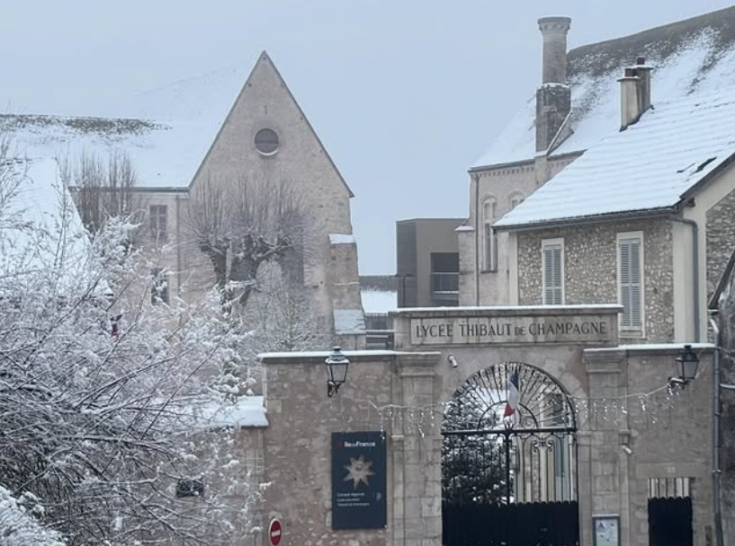
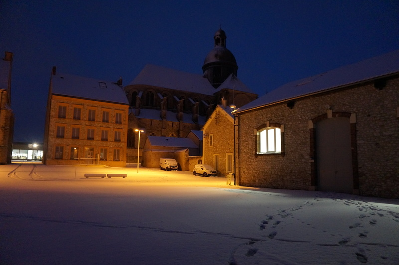

Le lycée
Le lycée Thibaut de Champagne, établissement public local d’enseignement (EPLE) relevant de l’académie de Créteil, est situé au cœur de la ville haute de Provins, dans un environnement patrimonial remarquable. Une partie de ses bâtiments s’inscrit dans l’ancien palais des comtes de Champagne, témoignant d’un héritage historique exceptionnel.
Fondé au XVIe siècle, l’établissement s’inscrit dans une tradition éducative ancienne, tout en ayant su évoluer pour répondre aux exigences contemporaines de l’enseignement secondaire et supérieur. D’importants travaux de rénovation ont permis de moderniser les infrastructures tout en préservant la qualité architecturale du site, inscrit au titre des monuments historiques.

Le lycée accueille aujourd’hui plus de 1000 élèves et propose une offre de formation complète :
- enseignement général
- enseignement technologique
- voie professionnelle
- sections de techniciens supérieurs (BTS)
L’établissement veille à offrir aux élèves un cadre de travail exigeant et structurant, favorisant la réussite scolaire, l’ouverture culturelle et l’acquisition de compétences solides. Il propose également une diversité d’enseignements et d’options, notamment en langues vivantes et anciennes, ainsi que des dispositifs spécifiques tels que les sections européennes et sportives.
